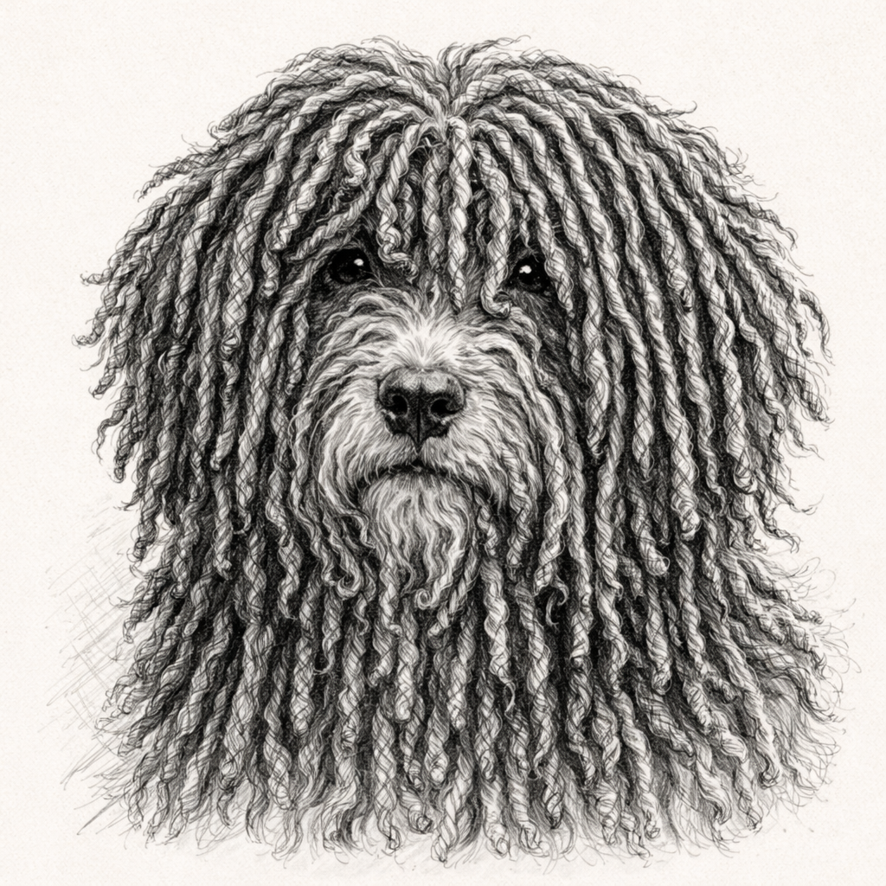
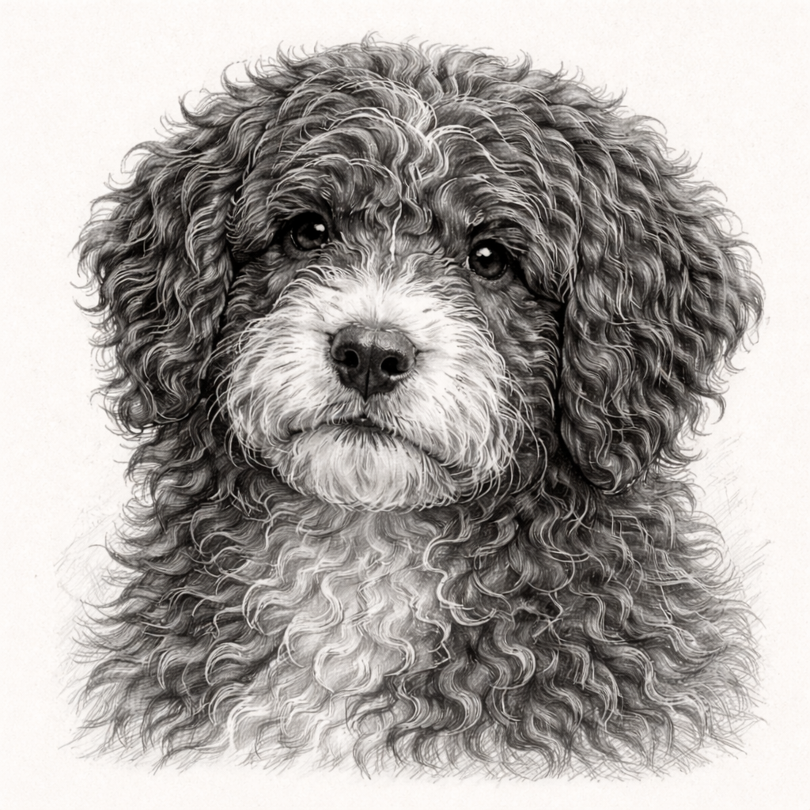

The Ultimate Spanish
Water Dog Grooming Guide
Everything a first-time SWD owner needs — from understanding their unique coat to choosing the perfect style. Step-by-step, beautifully illustrated, beginner-friendly.
“The Spanish Water Dog’s coat is completely unique — it never sheds in the traditional sense. Instead, it forms natural cords over time, almost like dreadlocks. Grooming one wrong can be irreversible.”

The classic SWD look. Cords form naturally and require minimal cutting — but careful separation.

Clipped short all over — ideal for hot climates or active dogs. Easy to maintain at home.

A middle ground — fluffy and curly but trimmed regularly. Great for beginners to maintain.
Dense, tightly curled. Naturally water-resistant. Prone to matting if not separated regularly during growth phase.
Softer, looser curls. Less likely to cord naturally. Easier to manage but still needs breed-specific care.
Softer and less defined. Critical formative period — how you care for it now determines the adult coat’s health.
Fully formed cords, robust and defined. Requires specific washing techniques and drying time (up to 4+ hours!).
“Spanish Water Dogs are one of the few breeds where you should NEVER brush the coat once cords have begun forming. This guide shows you exactly when — and how — to make that transition.”
Breed introduction
History, temperament, and why their coat is unlike any other breed’s.
Step-by-step grooming
Illustrated walkthroughs for every style and life stage.
Washing & drying
The right products, temperatures, and drying methods for SWD coats.
Maintenance schedules
Monthly, seasonal, and yearly grooming routines — all laid out clearly.
Common mistakes
The 10 most common grooming errors new SWD owners make — and how to avoid them.
Fun facts & diagrams
Eye-catching “Did you know?” callouts and infographics throughout.
-
You’re considering getting a Spanish Water Dog and want to know what grooming really involves
-
You just brought home an SWD puppy and feel overwhelmed by coat care
-
You want to reduce groomer visits and learn to do it confidently at home
-
You love a beautifully designed, easy-to-read guide you’ll actually use
Your dog deserves expert care.
You deserve a guide that makes it easy.
One payment. Instant download. Everything you need to groom your Spanish Water Dog with confidence — from day one.